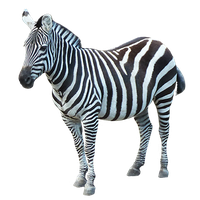

Animal- Raccoon Dog
- Despite its name, a raccoon dog, a.k.a. Nyctereutes procyonoides, is neither a raccoon nor a dog, but it does belong to the canid family, which is a lineage that includes dogs, wolves, and foxes.
- the adorable omnivorous creatures that are found in forests, wetlands, farmlands, and urban areas.
- Tanukis can be found all over Europe, Russia, China, Estonia, Japan, and Scandinavia, but not in North America.
Animal- Wild Boar
- Wild boars are omnivorous and easily adapt to changes. They were hunted in Europe from long ago for many of their body parts, and were shown in the mythology of many ancient civilizations
- mythology showed them as fierce, sometimes evil, while others showed them as brave, powerful animals. Again, others saw them as parasitic. Even today many people see wild boars very differently.
- The hair of the boar was often used when making the toothbrush until the 1930s.The hair for the bristles usually came from the neck area of the boar.

Animal- Zebra
- In Africa there are three different species of zebra- the plains zebra, Grevy's zebra and mountain zebra.
- Within a herd, zebras tend to stay together in smaller family groups.
- Zebras are constantly on the move for fresh grass to eat- they'll travel thousands of kilometres in search of grass